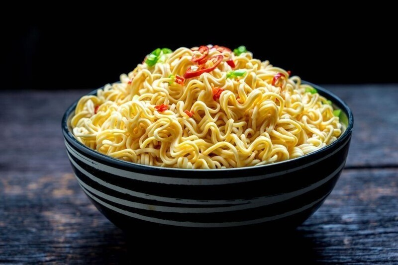
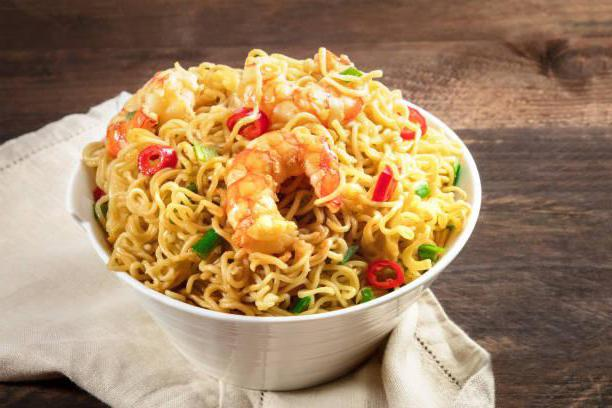

123-456-7890
Магазин дошираков
Новинки
Производство

Доширак Plus со вкусом говядины
Отличается острым вкусом из-за добавленного в состав красного перца. А мясной вкус придает ароматизатор «говядина» и глутамат натрия. В пластиковой упаковке помимо брикета из лапши, находится два пакетика со специями и удобная одноразовая вилка.

Доширак Plus со вкусом курицы
В лапшу и приправу из сушеных овощей добавлена богатая йодом ламинария – источник натурального йода. Благодаря высококачественной муке и картофельному крахмалу из Европы, лапша сохраняет упругость и форму после приготовления.
Состав:
Пшеничная мука в/с, пальмовое масло, модифицированный крахмал, соль, лук сушеный, сушеная ламинария (порошок), клейковина, эмульгатор загуститель, краситель В-каротин, комплексная пищевая добавка "Премикс", экстракт приправы.